install.packages("pacman") #para instalar el paquete pacman (solo una vez)7 Análisis de datos usando R
7.1 Tareas que se deben de hacer para llevar a cabo un proyecto de analisis de datos
Es posible que ya tienes conocimiento sobre la estructura del documento que debes desarrollar sobre analizar datos ya sea para toma de decisiones, u otros tipos como el trabajo final, aquí nos enfocaremos en la sección de resultados, donde tienes que realizar tablas, gráficos y análisis estadísticos. Aquí un listado de los elementos requeridos en la sección de resultado (ejemplos):
Proporciona número de casos, incidencia o prevalencia del evento
Características clínicas, por ejemplo, síntomas comunes, porcentaje de hospitalizados o fallecidos, resultados de laboratorio como porcentaje de confirmados o distribución por especie o subtipo (generalmente presentados en una tabla)
Tiempo, por ejemplo, casos por año, mes, semana u otro intervalo apropiado, para mostrar patrones o cambios a lo largo del tiempo. Puede estratificarse por grupo de edad, sexo, región o característica de persona o lugar (generalmente se presenta en un gráfico). Señale cambios importantes, tendencias estacionales, aberraciones (p. Ej., Brotes) u otros patrones inusuales.
Lugar, por ejemplo, por área geográfica (generalmente se presenta con un mapa o una tabla). Los números y las tasas son igualmente importantes.
Persona, por ejemplo, por grupo de edad, sexo y otras características relevantes (generalmente presentadas en una tabla). Los números y las tasas son importantes.
Otros resultados destacados que no se incluyen en las categorías enumeradas anteriormente. Por ejemplo, muchos informes resumidos de vigilancia incluyen datos sobre la integridad y puntualidad de los informes de cada fuente de informes.
Con una base de datos de ejemplo vamos a realizar los pasos en R para producir los requerimientos sugeridos anteriormente. Vamos a usar como fuente de datos para este ejercicio una base de datos de casos de VIH positivos notificados. (Esta base está disponible en el siguiente link).
Esta base de datos (o la que vayas a usar) debes de colocarla en la subcarpeta de “Bases de datos” dentro de la carpeta del proyecto (ejemplo la mi carpeta donde está el proyecto de Rstudio se llama trabajos de campo). A modo de refrescamiento, ver la siguiente imagen de la estructura de sub-carpetas de un proyecto, su jerarquía.
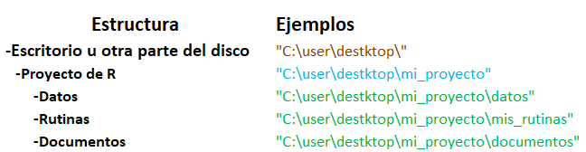
7.1.1 Organización general antes de comenzar
Como refrescamiento, antes de comenzar recuerda crear el proyecto (ver la sección de Comenzar a trabajar con R y la interfaz de Rstudio)@ref(comenzar-a-trabajar-con-r-y-la-interfaz-de-rstudio).
Procesamiento de datos (cargar, editar, transformar dataframes)
Crear un documento de rutina de R, (Ctrl+shift+N o en File, R script),
Comentar al menos el título del trabajo que estas haciendo (escribir # , que es el carácter para hacer comentarios, después de este puedes escribir cualquier cosa y no será interpretado como código).
Instalar el paquete pacman(luego nos permitirá con mayor facilidad instalar el resto)
Cargar los siguientes paquetes:
rio (para cargar archivos excel y otros formatos)
tidyverse (para transformar, revisar la base de datos)
janitor (para tablas y limpieza de datos)
flextable (para formato de presentación de las tablas)
lubridate (para trabajar con funciones con variables de formatos de fecha)
skimr (para revisar la base de datos)
here (para ayudarnos a encontrar los archivos que vamos a usar, también a guardarlos)
gtsummary (para hacer tablas presentables y cálculos que usamos con frecuencia en epidemiología)
Para cargar estos paquetes procedemos a usar la función de p_load del paquete pacman, luego de terminar la instalación de pacman, en el panel editor de rutinas, en la nueva rutina escribes la siguiente función:
pacman::p_load(rio,
tidyverse,
janitor,
lubridate,
skimr,
here,
flextable,
gtsummary) #para instalar y cargar los paquetes necesariosAlgo a tomar en cuenta que para instalar estos paquetes debes tener internet, después que estén instalados no se necesita instalar de nuevo (al menos que re-instales o actualices Rstudio).
Luego cargar todos los paquetes puedes hacerlo desde una sola línea de código o de forma individual con la función de R base library().
Antes de continuar, presiona Ctrl+S para guardar el archivo de rutina en la carpeta de tu proyecto “rutinas” o ya sea en el icono de guardar o desde file, recuerda, Ctrl+R al final de la línea de cógido o en “run” para ejecutarlo.
Ahora para cargar la base de datos al panel de área de trabajo tenemos dos formas, escribiendo directamente o como vimos cuando explicamos los dataframes en el capítulo de objetos de R @ref(objetos-en-r) usando la interfaz de rstudio o simplemente por comandos.
Recuerda tener tus bases de datos en la carpeta de “datos” dentro de tu carpeta del proyecto, esto es muy importante para facilitar el trabajo.
De todas formas, vamos a ver como sería el código para cargar un archivo Excel:
#para crear un objeto dataframe (nuestra base)
base <- import(here("datos", "sinave_vih.xlsx")) %>%
clean_names()Explicando un poco el código anterior, estamos creando un nuevo objeto llamado “base”, a través de la función de import del paquete rio, que sirve para cargar archivos tipo .xls, .xlsx. y con la finalidad de localizar la ruta del archivo de la forma más sencilla posible usamos la función here() del paquete here escribiendo los parámetros de la sub-carpeta donde está la base de datos y el segundo parámetro, después de una coma, el nombre del archivo (ambos parámetros dentro de comillas). Luego sigue un operador pipe (%>%) que significa “luego” a través de la función clean_names() del paquete janitor con el propósito de “normalizar” los nombres de las columnas o variables (poner todas en minúsculas, quitar caracteres poco comunes y espacios).
Si hiciste los pasos correctamente debes de tener una imagen similar:
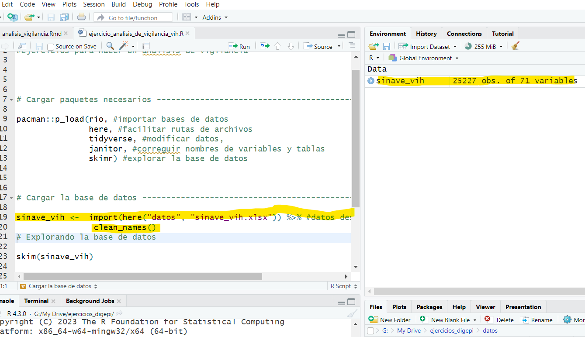
Donde puedes ver a la derecha que ya tienes un objeto dataframe cargado (la base de datos) que tiene 25,227 filas y 71 variables o columnas.
7.1.1.1 Exploración de la base de datos, (ver la base de datos antes de comenzar el procesamiento).
Entonces, primera pregunta, ¿Cuál es el próximo paso por seguir? Realmente debería ser el análisis, pero primero, seria bueno revisar la base para ver los datos “malos” es decir, por ejemplo, valores anormales, campos vacíos o datos que se cargaron mal, como pasa a veces con las fechas.
El paquete de rio con la fórmula de import() hace un intento de determinar el tipo de variable que carga desde el archivo de Excel, pero a veces falla y es usualmente con las fechas porque sin querer había una fecha escrita en un formato no reconocido y el resto como número.
Para “explorar” la base de datos podemos hacerlo de forma directa haciendo clic en el panel de ambiente de trabajo en el objeto base (o el nombre que le hayas dado) o puedes escribir en la consola de comandos View(base) para cargar el visor de datos.
Otra forma más completa de explorar la base de datos es a través de la función skim() o skim_tee() (ambas producen el mismo reporte) del paquete skimr (waring2022?), para proveernos un resumen de cada variable, que tipo de variable es y nos muestra el total de campos vacíos, valores únicos por ejemplo.
Ya estamos entrando de lleno en el análisis, siempre el primer paso es ver, verificar los datos, valores extremos, datos faltantes, esto es una buena práctica (obligatoria diría yo) cuando estamos haciendo análisis, luego viene la limpieza de los datos.
Luego de escribir en tu rutina el último comando, debes tener escrito el siguiente código y obtener este resultado:
base <- import(here("datos", "sinave_vih.xlsx")) %>%
clean_names()
skimr::skim_tee(base) #para genera un mini reporte de la base── Data Summary ────────────────────────
Values
Name data
Number of rows 25615
Number of columns 75
_______________________
Column type frequency:
character 44
logical 9
numeric 20
POSIXct 2
________________________
Group variables None
── Variable type: character ────────────────────────────────────────────────────
skim_variable n_missing complete_rate min max empty n_unique
1 sospecha 0 1 52 52 0 1
2 sexo 0 1 8 9 0 2
3 grupo_edad 0 1 2 8 0 9
4 ocupacion 16923 0.339 1 25 0 796
5 actividad_ocupacional 24767 0.0331 5 120 0 167
6 grupo_ocupacional 24769 0.0330 21 76 0 10
7 categoria_de_afiliacion 0 1 10 23 0 5
8 ars 20495 0.200 3 29 0 27
9 nivel_educativo 6763 0.736 8 25 0 6
10 embarazada 10260 0.599 2 2 0 2
11 etapa_gestacion 23097 0.0983 5 9 0 3
12 tipo_de_parto 25155 0.0180 7 7 0 3
13 region_residencia 5040 0.803 6 20 0 10
14 provincia 0 1 7 25 0 33
15 municipio 0 1 6 33 0 289
16 distrito 3928 0.847 3 48 0 345
17 seccion 5673 0.779 4 53 0 809
18 barrio 8876 0.653 1 51 0 1750
19 direccion 0 1 3 174 0 21503
20 das_dps_residencia 12816 0.500 9 12 0 11
21 pais_procedencia 0 1 4 31 0 26
22 telefono 9929 0.612 1 12 0 14464
23 colectivo 8976 0.650 6 36 0 11
24 nombre_colectivo 8390 0.672 1 50 0 2653
25 id_muestra_1 25603 0.000468 1 11 0 12
26 region 0 1 6 20 0 9
27 institucion 0 1 3 9 0 6
28 establecimiento 0 1 4 49 0 303
29 das_dps_establecimiento 0 1 4 22 0 40
30 expediente 0 1 1 20 0 22880
31 tipo_atencion 82 0.997 8 13 0 4
32 complicaciones 24005 0.0629 7 69 0 19
33 signos_y_sintomas 3 1.000 3 1118 0 9631
34 comorbilidad 9465 0.630 1 186 0 123
35 muestra 268 0.990 2 2 0 2
36 resultado_final 20575 0.197 9 10 0 3
37 condicion 0 1 4 6 0 2
38 gravedad 16183 0.368 5 20 0 3
39 folio_no 25538 0.00301 7 11 0 75
40 edad_fecha_defuncion 25510 0.00410 5 8 0 74
41 diag_final 24394 0.0477 10 56 0 6
42 clasf_final 24394 0.0477 10 10 0 3
43 fuente_deteccion 0 1 14 24 0 5
44 confirmado_por 24396 0.0476 11 19 0 2
whitespace
1 0
2 0
3 0
4 0
5 0
6 0
7 0
8 0
9 0
10 0
11 0
12 0
13 0
14 0
15 0
16 0
17 0
18 0
19 0
20 0
21 0
22 0
23 0
24 0
25 0
26 0
27 0
28 0
29 0
30 0
31 0
32 0
33 0
34 0
35 0
36 0
37 0
38 0
39 0
40 0
41 0
42 0
43 0
44 0
── Variable type: logical ──────────────────────────────────────────────────────
skim_variable n_missing complete_rate mean count
1 fecha_inicio_erupcion 25615 0 NaN ": "
2 id_muestra_2 25615 0 NaN ": "
3 sitio_primario 25615 0 NaN ": "
4 tipo_histologico 25615 0 NaN ": "
5 cie10_basica 25615 0 NaN ": "
6 cie10_a 25615 0 NaN ": "
7 cie10_b 25615 0 NaN ": "
8 cie10_c 25615 0 NaN ": "
9 cie10_d 25615 0 NaN ": "
── Variable type: numeric ──────────────────────────────────────────────────────
skim_variable n_missing complete_rate mean sd p0
1 pxid 0 1 12808 7395. 1
2 fecha_nacimiento 0 1 30282. 4960. 8416
3 edad1 119 0.995 36.8 13.4 0
4 edad2 20494 0.200 0.0842 0.710 0
5 edad3 20537 0.198 0.101 1.40 0
6 semanas_amenorrea 23407 0.0862 21.3 9.75 0
7 semana_inicio_sintomas 0 1 25.6 15.3 1
8 mes_inicio_sintomas 0 1 6.32 3.50 1
9 ano_inicio_sintomas 0 1 2019. 1.41 2016
10 semana_atencion 0 1 25.7 15.2 1
11 mes_atencion 0 1 6.31 3.48 1
12 ano_atencion 0 1 2019. 1.40 2017
13 semana_toma_muestra 13577 0.470 25.5 14.9 1
14 fecha_toma_muestra 13577 0.470 43672. 531. 42737
15 semana_notificacion 0 1 26.1 15.0 1
16 fecha_notificacion 0 1 43738. 513. 42738
17 semana_defuncion 20496 0.200 0.553 4.34 0
18 mes_defuncion 25510 0.00410 6.53 3.28 1
19 ano_defuncion 25510 0.00410 2020. 1.44 2017
20 fecha_defuncion 25510 0.00410 43922. 531. 42769
p25 p50 p75 p100 hist
1 6404. 12808 19212. 25615 ▇▇▇▇▇
2 27144. 30902 33921 44501 ▁▁▆▇▁
3 27 35 45 98 ▁▇▅▁▁
4 0 0 0 11 ▇▁▁▁▁
5 0 0 0 30 ▇▁▁▁▁
6 13.8 20 29 42 ▂▆▇▅▃
7 11 26 39 53 ▇▆▇▆▆
8 3 6 9 12 ▇▅▅▅▇
9 2018 2019 2020 2021 ▆▆▇▆▇
10 11 26 39 53 ▇▆▆▆▆
11 3 6 9 12 ▇▅▅▅▇
12 2018 2019 2020 2021 ▅▆▇▆▇
13 12 25 38 53 ▇▆▆▆▆
14 43214 43638 44174 44567 ▆▆▇▅▇
15 12 26 39 53 ▇▆▇▆▆
16 43315 43718 44232 44615 ▅▆▇▆▇
17 0 0 0 52 ▇▁▁▁▁
18 4 6 9 12 ▇▆▇▃▇
19 2019 2020 2021 2021 ▃▁▂▅▇
20 43615 44110 44362 44562 ▃▁▂▅▇
── Variable type: POSIXct ──────────────────────────────────────────────────────
skim_variable n_missing complete_rate min
1 fecha_inicio_sintomas 0 1 2016-12-03 00:00:00
2 fecha_atencion 0 1 2017-01-02 00:00:00
max median n_unique
1 2022-01-01 00:00:00 2019-08-15 00:00:00 1811
2 2022-01-01 00:00:00 2019-08-23 00:00:00 1653En el ejemplo anterior:
¿Cuántas variables de texto, numéricas, lógicas (si/no, 1/0), de fechas se cargaron?
¿Cuantas de las variables están en blanco o tienen muchos valores vacíos, cómo es la distribución de las variables numéricas y fechas, (valores extremos)?
¿Hay variables que se importaron incorrectamente? Variables que son de un formato y se importaron de otro tipo (fechas que se importan como texto o número por ejemplo)
Estas son las preguntas que debemos hacernos a partir de este resumen para ir viendo la data y hacer la limpieza de datos como por ejemplo excluir columnas o variables, filtrar valores extremos o editarlos, cambiar o corregir el formato.
En el ejemplo anterior vemos que tenemos 4 tablas de tipo de variables (“Column type frequency:”)
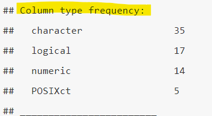
Luego debajo veremos en detalle por cada tipo de variable una tabla con el nombre de la variable, el total de campos vacíos, la tasa de completitud, valores mínimos, máximos, promedios y valores únicos.
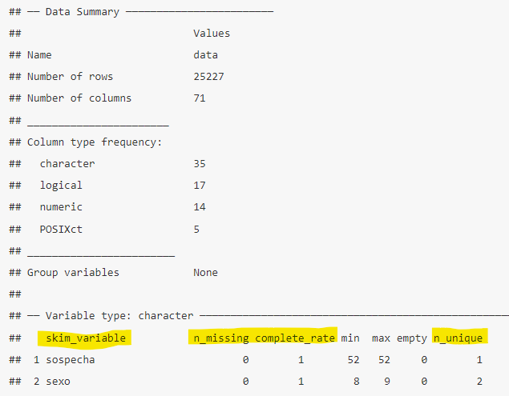
En general, después de este resumen se pueden definir próximos pasos para el análisis, incluir en tu reporte, en anexos, un resumen como este, añade más “confianza” a tus hallazgos y conclusiones porque estás mostrando de forma rápida la “salud” de tus datos.
Esta exploración inicial de datos puedes hacerlo de diferentes maneras, te muestro esta de usar el paquete skimr porque es más “amigable”, detallada y rápida.
A medida que vamos avanzando con este ejercicio, vamos a explicar en más detalles los tipos de campos/variables que identifica R.
7.1.1.2 Limpieza /re-structuración de datos
Este paso vamos a tomar la base original y modificarla para preparar nuestro análisis. Tomando en cuenta que debes de preparar un plan de análisis y que este se enfocará en un análisis tipo descriptivo (en tiempo, lugar y persona) y hacer los siguientes pasos:
Vamos a revisar el listado de variables que obtuvimos del resumen del ejercicio anterior (resumen de variables) y seleccionar las que necesitamos para el análisis.
Vamos a re-codificar variables que necesiten cambios o hacer ajustes.
Vamos a excluir o modificar los valores de las variables de interés.
Una de las características “poderosas” y deseadas de R es que puedes crear un nuevo objeto a partir de otro, dado que puedes hacer múltiples versiones del original.
Particularmente para este análisis vamos a crear un nuevo objeto dataframe (lo podemos llamar base_arreglada) donde este solo tendrá las variables o columnas para nuestro análisis y trataremos de excluir los valores no deseados y crear nuevas variables a partir de las que tenemos.
Agrega a tu rutina el siguiente código:
base_arreglada <- base %>% #creamos un nuevo elemento
select(fecha_notificacion, #seleccionamos las variables que necesitamos
fecha_atencion,
mes_atencion,
ano_atencion,
semana_atencion,
sexo,
pais_procedencia,
grupo_edad,
edad1,
nivel_educativo,
provincia,
das_dps_residencia,
das_dps_establecimiento,
clasf_final,
condicion) %>%
filter(!is.na(edad1)) %>% #filtramos aquellos casos que no tienen edad
mutate(provincia_establecimiento=case_when(
str_detect(das_dps_establecimiento, "SD-Area")~"Santo Domingo",
str_detect(das_dps_establecimiento, "Santiago I")~"Santiago",
str_detect(das_dps_establecimiento, "DN-Area ")~"Distrito Nacional",
TRUE~das_dps_establecimiento), #crear una nueva variable para combinar las areas de salud en la provincia del establecimiento
provincia_caso=str_sub(provincia, 4,-1L), #crear una nueva variable de provincia del caso pero sin la numeracion)
diagnosticado_misma_prov=case_when(
provincia_caso==provincia_establecimiento~1,
TRUE~0))
head(base_arreglada) #para ver un ejemplo de la nueva base fecha_notificacion fecha_atencion mes_atencion ano_atencion semana_atencion
1 44383 2021-07-03 7 2021 26
2 43444 2018-11-22 11 2018 47
3 43454 2018-11-19 11 2018 47
4 43460 2018-11-22 11 2018 47
5 44398 2021-07-20 7 2021 29
6 43182 2018-03-09 3 2018 10
sexo pais_procedencia grupo_edad edad1 nivel_educativo
1 Femenino República Dominicana 30_39 32 No sabe / Sin información
2 Femenino República Dominicana 20_29 21 Primaria (1-4)
3 Femenino República Dominicana 20_29 27 Primaria (1-4)
4 Femenino República Dominicana 50_59 57 Primaria (1-4)
5 Femenino República Dominicana 50_59 55 Primaria (1-4)
6 Femenino República Dominicana 20_29 24 <NA>
provincia das_dps_residencia das_dps_establecimiento clasf_final
1 32 Santo Domingo SD-Area VII SD-Area VII <NA>
2 21 San Cristóbal <NA> San Cristóbal <NA>
3 21 San Cristóbal <NA> San Cristóbal <NA>
4 21 San Cristóbal <NA> San Cristóbal <NA>
5 25 Santiago Santiago II Santiago III <NA>
6 29 Monte Plata <NA> Santiago III <NA>
condicion provincia_establecimiento provincia_caso diagnosticado_misma_prov
1 Vivo Santo Domingo Santo Domingo 1
2 Vivo San Cristóbal San Cristóbal 1
3 Vivo San Cristóbal San Cristóbal 1
4 Vivo San Cristóbal San Cristóbal 1
5 Vivo Santiago Santiago 1
6 Vivo Santiago Monte Plata 0Vamos a explicar el código anterior, el primer paso crear un nuevo objeto (base_arregada) a partir del dataframe “base” usando el operador de asignación y luego o “entonces” (operador pipe o %>%) usamos la función select() de tidyverse para especificar las variables que vamos a usar en el análisis, luego (operador pipe) usamos la función filter para excluir aquellas observaciones que no tienen edad a través del operador ! (operador de negación) y la función is.na() de R base. Luego vamos usamos la función de mutate() para renombrar variable de provincia_establecimiento y también la variable provincia_caso para poder fusionar las áreas de salud en provincia a través de la función case_when() de tidyverse. Después para ver el nuevo dataframe (base_arreglada) usamos la función head() de utils para ver las primeras 6 observaciones.
Ya con este nuevo dataframe podemos comenzar a trabajar en nuestro análisis.
7.2 Análisis de tiempo
Ahora vamos a comenzar a hacer tablas usando algunas de las funciones de janitor para hacer nuestra exploración de datos.
Recordando que vamos a ir explicando los diferentes tipos de formatos de las variables o campos, en esta sección vamos a ver un formato muy común que son las fechas, las cual usamos para poder ver en el tiempo el comportamiento de algún evento. Cuando usamos la función de import() del paquete rio esta hace lo mejor posible de detectar que tiempo de campo es en base a su contenido, de forma predeterminada como formato o clase POCIXct o tiempo calendario,que es un formato especial de R para almacenar números en formato de fecha desde 1970-01-01. A veces los campos de fechas pueden importarse como texto y por lo tanto debemos transformar estos para poder hacer cálculos usando fechas. También para los gráficos la clase Date es mejor (veremos más con el uso del paquete ggplot) por lo que una recomendación es transformar los campos de fecha POCIXct a Date (si se importaron correctamente claro). Una forma para ver de forma rápida e individuar a que formato o clase pertenece una variable podemos usar la función class() de R base, por ejemplo: class(base_arreglada$fecha_atencion) si la queremos transformar puedes incluir en el ejercicio anterior, dentro de la función de mutate el cambio de las variable de fecha usando la función as.Date(). Para ver que clase o formato son todas las variables (muy parecido al uso de la función skim() ) de forma rápida, podemos usar la función str() de R base.
base_arreglada <- base %>%
select(fecha_notificacion,
fecha_atencion,
mes_atencion,
ano_atencion,
semana_atencion,
sexo,
pais_procedencia,
grupo_edad,
edad1,
nivel_educativo,
provincia,
das_dps_residencia,
das_dps_establecimiento,
clasf_final,
condicion) %>%
filter(!is.na(edad1)) %>%
mutate(provincia_establecimiento=case_when(
str_detect(das_dps_establecimiento, "SD-Area")~"Santo Domingo",
str_detect(das_dps_establecimiento, "Santiago I")~"Santiago",
str_detect(das_dps_establecimiento, "DN-Area ")~"Distrito Nacional",
TRUE~das_dps_establecimiento),
provincia_caso=str_sub(provincia, 4,-1L),
diagnosticado_misma_prov=case_when(
provincia_caso==provincia_establecimiento~1,
TRUE~0),
fecha_notificacion=as.Date(fecha_notificacion), #Agregamos el cambio de tipo POSIXct a Date para ambas variables fecha.
fecha_atencion=as.Date(fecha_atencion))
str(base_arreglada) #para ver las clases de todas las variables en el dataframe'data.frame': 25496 obs. of 18 variables:
$ fecha_notificacion : Date, format: "2091-07-08" "2088-12-11" ...
$ fecha_atencion : Date, format: "2021-07-03" "2018-11-22" ...
$ mes_atencion : num 7 11 11 11 7 3 2 9 7 8 ...
$ ano_atencion : num 2021 2018 2018 2018 2021 ...
$ semana_atencion : num 26 47 47 47 29 10 6 39 27 33 ...
$ sexo : chr "Femenino" "Femenino" "Femenino" "Femenino" ...
$ pais_procedencia : chr "República Dominicana" "República Dominicana" "República Dominicana" "República Dominicana" ...
$ grupo_edad : chr "30_39" "20_29" "20_29" "50_59" ...
$ edad1 : num 32 21 27 57 55 24 24 19 36 18 ...
$ nivel_educativo : chr "No sabe / Sin información" "Primaria (1-4)" "Primaria (1-4)" "Primaria (1-4)" ...
$ provincia : chr "32 Santo Domingo" "21 San Cristóbal" "21 San Cristóbal" "21 San Cristóbal" ...
$ das_dps_residencia : chr "SD-Area VII" NA NA NA ...
$ das_dps_establecimiento : chr "SD-Area VII" "San Cristóbal" "San Cristóbal" "San Cristóbal" ...
$ clasf_final : chr NA NA NA NA ...
$ condicion : chr "Vivo" "Vivo" "Vivo" "Vivo" ...
$ provincia_establecimiento: chr "Santo Domingo" "San Cristóbal" "San Cristóbal" "San Cristóbal" ...
$ provincia_caso : chr "Santo Domingo" "San Cristóbal" "San Cristóbal" "San Cristóbal" ...
$ diagnosticado_misma_prov : num 1 1 1 1 1 0 1 1 1 1 ...Para este análisis nos interesaría ver el comportamiento mensual de cada año de los casos reportados y aunque ya tenemos esta variables, mes y año de reporte y estas se pueden “fusionar” a veces es mejor hacer una transformación del formato dado que hacer esta fusión de la variable año y mes puede alterar el orden si no se hace de forma correcta. Con menos cantidad de código es más fácil transformar una fecha a otro tipo de presentación.
Veamos en acción lo que acabo de explicar:
base_arreglada %>%
mutate(a_mes_atencion=format(fecha_atencion, "%Y-%m")) %>% #Con esta línea de codigos creamos una nueva variable con el mes y año de atención
tabyl(a_mes_atencion) #hacemos una tabla simple con la nueva variable a_mes_atencion n percent
2017-01 302 1.184500e-02
2017-02 273 1.070756e-02
2017-03 346 1.357076e-02
2017-04 326 1.278632e-02
2017-05 403 1.580640e-02
2017-06 302 1.184500e-02
2017-07 396 1.553185e-02
2017-08 383 1.502196e-02
2017-09 307 1.204110e-02
2017-10 385 1.510041e-02
2017-11 352 1.380609e-02
2017-12 284 1.113900e-02
2018-01 432 1.694383e-02
2018-02 422 1.655162e-02
2018-03 412 1.615940e-02
2018-04 366 1.435519e-02
2018-05 373 1.462975e-02
2018-06 335 1.313932e-02
2018-07 389 1.525730e-02
2018-08 420 1.647317e-02
2018-09 336 1.317854e-02
2018-10 482 1.890493e-02
2018-11 445 1.745372e-02
2018-12 414 1.623784e-02
2019-01 564 2.212112e-02
2019-02 571 2.239567e-02
2019-03 525 2.059147e-02
2019-04 445 1.745372e-02
2019-05 580 2.274867e-02
2019-06 395 1.549263e-02
2019-07 504 1.976781e-02
2019-08 403 1.580640e-02
2019-09 367 1.439441e-02
2019-10 370 1.451208e-02
2019-11 409 1.604173e-02
2019-12 245 9.609350e-03
2020-01 618 2.423910e-02
2020-02 636 2.494509e-02
2020-03 372 1.459052e-02
2020-04 100 3.922184e-03
2020-05 242 9.491685e-03
2020-06 391 1.533574e-02
2020-07 382 1.498274e-02
2020-08 345 1.353153e-02
2020-09 384 1.506119e-02
2020-10 528 2.070913e-02
2020-11 594 2.329777e-02
2020-12 431 1.690461e-02
2021-01 491 1.925792e-02
2021-02 636 2.494509e-02
2021-03 590 2.314088e-02
2021-04 636 2.494509e-02
2021-05 499 1.957170e-02
2021-06 436 1.710072e-02
2021-07 610 2.392532e-02
2021-08 576 2.259178e-02
2021-09 525 2.059147e-02
2021-10 418 1.639473e-02
2021-11 455 1.784594e-02
2021-12 337 1.321776e-02
2022-01 1 3.922184e-05Como podemos ver en la salida anterior tenemos 5 años completos y el primer mes del 2022, si vamos a centrarnos en los últimos 3 años y podemos hacerlo con la función filter():
base_arreglada %>%
mutate(a_mes_atencion=format(fecha_atencion, "%Y-%m")) %>%
filter(fecha_atencion>="2019-01-01", fecha_atencion<"2022-01-01") %>% #Especificamos hasta donde queremos el periodo
tabyl(a_mes_atencion) #hacemos una tabla simple con la nueva variable a_mes_atencion n percent
2019-01 564 0.03395545
2019-02 571 0.03437688
2019-03 525 0.03160747
2019-04 445 0.02679109
2019-05 580 0.03491872
2019-06 395 0.02378085
2019-07 504 0.03034317
2019-08 403 0.02426249
2019-09 367 0.02209512
2019-10 370 0.02227574
2019-11 409 0.02462372
2019-12 245 0.01475015
2020-01 618 0.03720650
2020-02 636 0.03829019
2020-03 372 0.02239615
2020-04 100 0.00602047
2020-05 242 0.01456954
2020-06 391 0.02354004
2020-07 382 0.02299819
2020-08 345 0.02077062
2020-09 384 0.02311860
2020-10 528 0.03178808
2020-11 594 0.03576159
2020-12 431 0.02594822
2021-01 491 0.02956051
2021-02 636 0.03829019
2021-03 590 0.03552077
2021-04 636 0.03829019
2021-05 499 0.03004214
2021-06 436 0.02624925
2021-07 610 0.03672486
2021-08 576 0.03467790
2021-09 525 0.03160747
2021-10 418 0.02516556
2021-11 455 0.02739314
2021-12 337 0.02028898En los parámetros de filter() llamamos la variable dos veces usando los operadores mayor (>) e igual (=) para que se incluya el valor más antiguo seguido de una coma y para el valor más reciente usamos menor que (<) con un valor que no vamos a necesitar. Cuando especificamos el valor de una fecha siempre debe de ir entre comillas (” “). Todavía en el ejercicio anterior no hemos creado un nuevo objeto, para esto podemos hacer lo siguiente:
tabla_01 <- base_arreglada %>% #Nuevo objeto
mutate(a_mes_atencion=format(fecha_atencion, "%Y-%m")) %>%
filter(fecha_atencion>="2019-01-01", fecha_atencion<"2022-01-01") %>%
tabyl(a_mes_atencion)Ahora vamos a ver esta distribución mensual por condición de egreso:
tabla_01 <- base_arreglada %>%
mutate(a_mes_atencion=format(fecha_atencion, "%Y-%m")) %>%
filter(fecha_atencion>="2019-01-01", fecha_atencion<"2022-01-01") %>%
tabyl(a_mes_atencion,
condicion) %>% #Agragamos la variable nueva o de columna
adorn_totals(c("col", "row")) %>% #A partir de esta línea, se usan funciones de "adorn_" para agregar detalles a la tabla
adorn_percentages() %>%
adorn_pct_formatting() %>%
adorn_ns()
tabla_01 a_mes_atencion Muerto Vivo Total
2019-01 0.4% (2) 99.6% (562) 100.0% (564)
2019-02 0.0% (0) 100.0% (571) 100.0% (571)
2019-03 0.0% (0) 100.0% (525) 100.0% (525)
2019-04 0.0% (0) 100.0% (445) 100.0% (445)
2019-05 0.3% (2) 99.7% (578) 100.0% (580)
2019-06 0.3% (1) 99.7% (394) 100.0% (395)
2019-07 0.2% (1) 99.8% (503) 100.0% (504)
2019-08 0.0% (0) 100.0% (403) 100.0% (403)
2019-09 0.3% (1) 99.7% (366) 100.0% (367)
2019-10 0.3% (1) 99.7% (369) 100.0% (370)
2019-11 0.2% (1) 99.8% (408) 100.0% (409)
2019-12 0.0% (0) 100.0% (245) 100.0% (245)
2020-01 0.0% (0) 100.0% (618) 100.0% (618)
2020-02 0.6% (4) 99.4% (632) 100.0% (636)
2020-03 0.8% (3) 99.2% (369) 100.0% (372)
2020-04 2.0% (2) 98.0% (98) 100.0% (100)
2020-05 1.7% (4) 98.3% (238) 100.0% (242)
2020-06 0.3% (1) 99.7% (390) 100.0% (391)
2020-07 0.3% (1) 99.7% (381) 100.0% (382)
2020-08 0.0% (0) 100.0% (345) 100.0% (345)
2020-09 1.0% (4) 99.0% (380) 100.0% (384)
2020-10 0.4% (2) 99.6% (526) 100.0% (528)
2020-11 0.2% (1) 99.8% (593) 100.0% (594)
2020-12 0.9% (4) 99.1% (427) 100.0% (431)
2021-01 0.2% (1) 99.8% (490) 100.0% (491)
2021-02 0.6% (4) 99.4% (632) 100.0% (636)
2021-03 0.7% (4) 99.3% (586) 100.0% (590)
2021-04 0.6% (4) 99.4% (632) 100.0% (636)
2021-05 0.6% (3) 99.4% (496) 100.0% (499)
2021-06 2.1% (9) 97.9% (427) 100.0% (436)
2021-07 0.7% (4) 99.3% (606) 100.0% (610)
2021-08 0.7% (4) 99.3% (572) 100.0% (576)
2021-09 0.4% (2) 99.6% (523) 100.0% (525)
2021-10 0.5% (2) 99.5% (416) 100.0% (418)
2021-11 0.2% (1) 99.8% (454) 100.0% (455)
2021-12 0.9% (3) 99.1% (334) 100.0% (337)
Total 0.5% (76) 99.5% (16,534) 100.0% (16,610)Luego de ver el código anterior, también del paquete janitor, implementamos varias funciones asociadas con la función tabyl() para tablas con la finalidad de agregar totales y porcentajes.
Si queremos presentar la tabla en un formato exportable, podemos usar la función flextable() del paquete flextable y nuestra primera tabla quedaría así:
tabla_01 <- base_arreglada %>%
mutate(a_mes_atencion=format(fecha_atencion, "%Y-%m")) %>%
filter(fecha_atencion>="2019-01-01", fecha_atencion<"2022-01-01") %>%
tabyl(a_mes_atencion,
condicion) %>% #Agragamos la variable nueva o de columna
adorn_totals(c("col", "row")) %>% #A partir de esta línea, se usan funciones de "adorn_" para agregar detalles a la tabla
adorn_percentages() %>%
adorn_pct_formatting() %>%
adorn_ns() %>%
flextable::flextable() # Con esta función creamos una versión presentable de la tabla
tabla_01a_mes_atencion | Muerto | Vivo | Total |
|---|---|---|---|
2019-01 | 0.4% (2) | 99.6% (562) | 100.0% (564) |
2019-02 | 0.0% (0) | 100.0% (571) | 100.0% (571) |
2019-03 | 0.0% (0) | 100.0% (525) | 100.0% (525) |
2019-04 | 0.0% (0) | 100.0% (445) | 100.0% (445) |
2019-05 | 0.3% (2) | 99.7% (578) | 100.0% (580) |
2019-06 | 0.3% (1) | 99.7% (394) | 100.0% (395) |
2019-07 | 0.2% (1) | 99.8% (503) | 100.0% (504) |
2019-08 | 0.0% (0) | 100.0% (403) | 100.0% (403) |
2019-09 | 0.3% (1) | 99.7% (366) | 100.0% (367) |
2019-10 | 0.3% (1) | 99.7% (369) | 100.0% (370) |
2019-11 | 0.2% (1) | 99.8% (408) | 100.0% (409) |
2019-12 | 0.0% (0) | 100.0% (245) | 100.0% (245) |
2020-01 | 0.0% (0) | 100.0% (618) | 100.0% (618) |
2020-02 | 0.6% (4) | 99.4% (632) | 100.0% (636) |
2020-03 | 0.8% (3) | 99.2% (369) | 100.0% (372) |
2020-04 | 2.0% (2) | 98.0% (98) | 100.0% (100) |
2020-05 | 1.7% (4) | 98.3% (238) | 100.0% (242) |
2020-06 | 0.3% (1) | 99.7% (390) | 100.0% (391) |
2020-07 | 0.3% (1) | 99.7% (381) | 100.0% (382) |
2020-08 | 0.0% (0) | 100.0% (345) | 100.0% (345) |
2020-09 | 1.0% (4) | 99.0% (380) | 100.0% (384) |
2020-10 | 0.4% (2) | 99.6% (526) | 100.0% (528) |
2020-11 | 0.2% (1) | 99.8% (593) | 100.0% (594) |
2020-12 | 0.9% (4) | 99.1% (427) | 100.0% (431) |
2021-01 | 0.2% (1) | 99.8% (490) | 100.0% (491) |
2021-02 | 0.6% (4) | 99.4% (632) | 100.0% (636) |
2021-03 | 0.7% (4) | 99.3% (586) | 100.0% (590) |
2021-04 | 0.6% (4) | 99.4% (632) | 100.0% (636) |
2021-05 | 0.6% (3) | 99.4% (496) | 100.0% (499) |
2021-06 | 2.1% (9) | 97.9% (427) | 100.0% (436) |
2021-07 | 0.7% (4) | 99.3% (606) | 100.0% (610) |
2021-08 | 0.7% (4) | 99.3% (572) | 100.0% (576) |
2021-09 | 0.4% (2) | 99.6% (523) | 100.0% (525) |
2021-10 | 0.5% (2) | 99.5% (416) | 100.0% (418) |
2021-11 | 0.2% (1) | 99.8% (454) | 100.0% (455) |
2021-12 | 0.9% (3) | 99.1% (334) | 100.0% (337) |
Total | 0.5% (76) | 99.5% (16,534) | 100.0% (16,610) |
Con esta tabla podemos ir haciendo nuestro análisis de como los casos nuevos de VIH se han comportado en estos últimos 3 años. Podemos ir agregando en nuestro reporte “El total de casos reportados desde enero del 2019 hasta diciembre del 2021 fueron 16,374” por ejemplo. Otro dato que nos llama la atención es la proporción de fallecidos desde el inicio del periodo de análisis fue menor de 1% pero en los meses de abril-mayo del 2020 y septiembre y diciembre del 2020 fue mayor de lo esparado (estos son los puntualizaciones a tomar en cuenta para reportar y generar preguntas).
Un detalle a resaltar es, en esta tabla (tabla_01) le agregamos un formato de presentación ya no la podemos usar para hacer otros análisis, como por ejemplo sacar el promedio de casos reportados por mes (u otras medidas de tendencia central). Digamos que quisiéramos reportar estos valores, simplemente podemos crear un objeto a partir de esta tabla original
resumen_med_ten_cent <- base_arreglada %>% #nuevo objeto, un dataframe
mutate(a_mes_atencion=format(fecha_atencion, "%Y-%m")) %>%
filter(fecha_atencion>="2019-01-01", fecha_atencion<"2022-01-01") %>%
tabyl(a_mes_atencion, condicion) %>%
adorn_totals("col") %>% #añadiendo total de columna
reframe(casos_fallecidos_min=min(Muerto, na.rm = T), #funcion para resumir datos
casos_fallecidos_pro=mean(Muerto, na.rm = T),
casos_fallecidos_sd=sd(Muerto, na.rm = T),
casos_fallecidos_median=median(Muerto, na.rm=T),
casos_fallecidos_max=max(Muerto, na.rm = T),
casos_vivos_min=min(Vivo, na.rm = T),
casos_vivos_pro=mean(Vivo, na.rm = T),
casos_vivos_sd=sd(Vivo, na.rm = T),
casos_vivos_median=median(Vivo, na.rm=T),
casos_vivos_max=max(Vivo, na.rm = T),
casos_total_min=min(Total, na.rm = T),
casos_total_pro=mean(Total, na.rm = T),
casos_total_sd=sd(Total, na.rm = T),
casos_total_median=median(Total, na.rm=T),
casos_total_max=max(Total, na.rm = T)) %>%
pivot_longer(1:ncol(.), names_to = "medida", values_to = "resultado")
resumen_med_ten_cent# A tibble: 15 × 2
medida resultado
<chr> <dbl>
1 casos_fallecidos_min 0
2 casos_fallecidos_pro 2.11
3 casos_fallecidos_sd 1.89
4 casos_fallecidos_median 2
5 casos_fallecidos_max 9
6 casos_vivos_min 98
7 casos_vivos_pro 459.
8 casos_vivos_sd 125.
9 casos_vivos_median 450.
10 casos_vivos_max 632
11 casos_total_min 100
12 casos_total_pro 461.
13 casos_total_sd 125.
14 casos_total_median 450
15 casos_total_max 636 El código anterior pudiera parecer cargado (y lo es) pero es una buena forma de ver los detalles de los valores que queremos obtener y también el uso de otras funciones que tienen mucho peso cuando manejamos datos como es reframe(), pivot_() de tidyverse que sirven para crear objetos con resumen de nuestros datos.
Con el objeto resumen_med_ten_cent podemos ver que el promedio de casos totales por mes fue de 454 casos reportados, con un mínimo de 97 casos y un máximo de 618.
Otro abordaje para obtener estos resultados y también en un formato presentable es usando la función summary de R base, nos ahorra muchos pasos. Aquí un ejemplo :
base_arreglada %>%
mutate(a_mes_atencion=format(fecha_atencion, "%Y-%m")) %>%
filter(fecha_atencion>="2019-01-01", fecha_atencion<"2022-01-01") %>%
tabyl(a_mes_atencion, condicion) %>%
adorn_totals("col") %>%
summary() #Esta función se puede usar en los dataframes como en las matrices y vectores. a_mes_atencion Muerto Vivo Total
Length:36 Min. :0.000 Min. : 98.0 Min. :100.0
Class :character 1st Qu.:1.000 1st Qu.:380.8 1st Qu.:383.5
Mode :character Median :2.000 Median :449.5 Median :450.0
Mean :2.111 Mean :459.3 Mean :461.4
3rd Qu.:4.000 3rd Qu.:571.2 3rd Qu.:572.2
Max. :9.000 Max. :632.0 Max. :636.0 El único detalle que no tenemos la desviación estándar, pero es un resumen bien completo para los valores numéricos.
En fin, tenemos una primera parte, vamos a ver la versión gráfica, usando las funciones del ggplot2 de tydiverse. Estas funciones se basan en las reglas de “gramática de gráficos” y haciendo una explicación bien resumida, esta gramática son reglas que similarmente tenemos en los idiomas como el español e inglés, también en los gráficos se aplican. Un gráfico es un compuesto de varios elementos como son la estética, el texto que lleva, los ejes, los formatos y se van construyendo por capas (layers en inglés). Hay libros dedicados a este tema que ayuda mucho a como construir de forma más estructurada un gráfico para analizar datos.
La ventaja de escribir código para crear gráficos es que permite automatizar el proceso y muchas veces podemos tomar prestado el código para no comenzar desde 0.
La mejor forma de explicar el código o lenguaje de gramática de gráficos (en adelante ggplot) es haciendo un ejercicio (así fue como pude entenderla y hacer los gráficos en R). También antes de hacer el gráfico, es bueno planear en base a los datos que se tienen que tipo de gráficos puede ser usado.
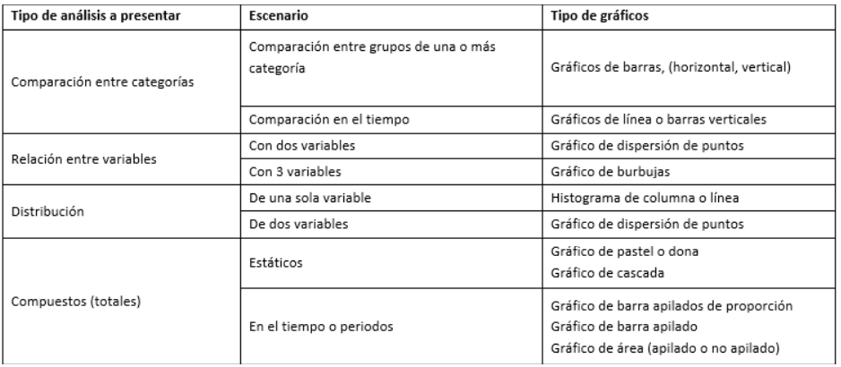
Veamos un ejemplo usando la tabla que hemos venido trabajando:
base_arreglada %>%
mutate(a_mes_atencion=format(fecha_atencion, "%Y-%m")) %>%
filter(fecha_atencion>="2019-01-01", fecha_atencion<"2022-01-01") %>%
tabyl(a_mes_atencion, condicion) %>%
adorn_totals("col") %>%
ggplot(aes(x=a_mes_atencion, y=Total))+ #Espacificamos lo que vamos a graficar
geom_col() #Agregamos una capa de columnas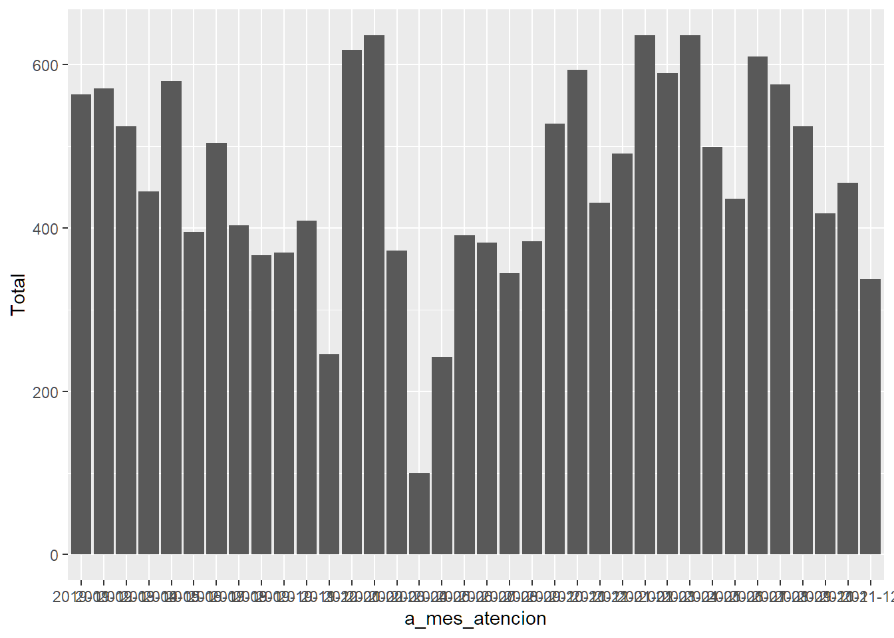
¡Tenemos nuestro primer gráfico!, pero como puedes ver, puede ser mejorado con el fin de ser presentado en un reporte. Lo primero que vemos que está alterado es el eje x, o el año y la fecha de la notificación. Una forma de corregir esto es rotando a 90 grados el texto. A tomar en cuenta, cuando transformamos datos, usamos el operador pipe (%>%), en ggplot, el equivalente es el signo de suma (+).
base_arreglada %>%
mutate(a_mes_atencion=format(fecha_atencion, "%Y-%m")) %>%
filter(fecha_atencion>="2019-01-01", fecha_atencion<"2022-01-01") %>%
tabyl(a_mes_atencion, condicion) %>%
adorn_totals("col") %>%
ggplot(aes(x=a_mes_atencion, y=Total))+ #Espacificamos lo que vamos a graficar
geom_col(color="black", fill="white")+ #Agregamos una capa de columnas y cambiamos el color del borde y del llenado
theme(axis.text.x = element_text(angle=90, vjust=0.5),
panel.background = element_rect(fill="white")) #en esta sección cambiamos parametros de cada elemento del gráfico, color, tamaño, etc. de elementos generales, Solo estamos modificando el texto del eje x y el color de fondo del panel.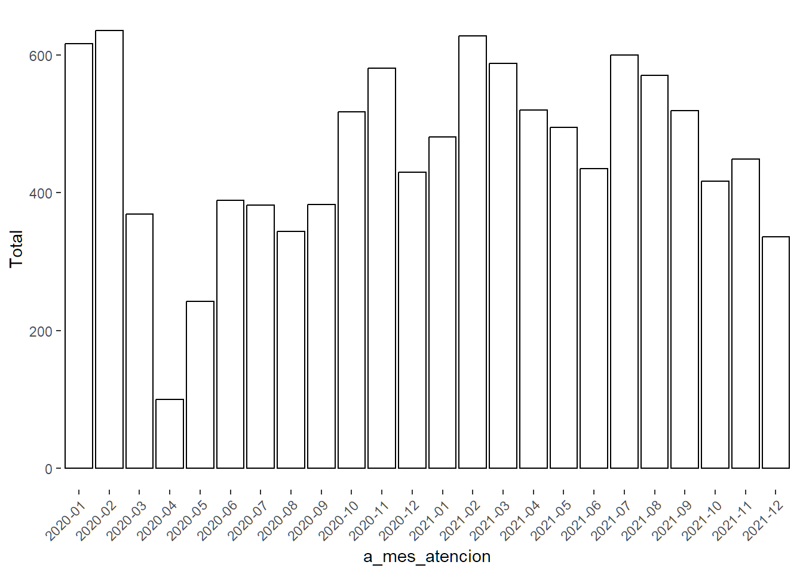
Hemos cambiado varios elementos como el color de las barras, la presentación del texto del eje x y el color de fondo del panel. Ahora vamos a agregar los títulos, como el título del gráfico y los de los ejes. Para esto insertamos el comando de labs() que significa labels o etiquetas.
base_arreglada %>%
mutate(a_mes_atencion=format(fecha_atencion, "%Y-%m")) %>%
filter(fecha_atencion>="2019-01-01", fecha_atencion<"2022-01-01") %>%
tabyl(a_mes_atencion, condicion) %>%
adorn_totals("col") %>%
ggplot(aes(x=a_mes_atencion, y=Total))+ #Espacificamos lo que vamos a graficar
geom_col(color="grey75", fill="white")+ #Agregamos una capa de columnas y cambiamos el color del borde y del llenado
labs(title="Distribución de casos de VIH notificados",
subtitle = "Rep. Dominicana, 2019-2021",
x="Año y mes de diagnostico",
y="Casos notificados")+#Aquí especificamos el título, subtitulo y nombres de los ejes.
theme(axis.text.x = element_text(angle=90, vjust=0.5),
panel.background = element_rect(fill="white")) #en esta sección cambiamos parametros de cada elemento del gráfico, color, tamaño, etc. de elementos generales, Solo estamos modificando el texto del eje x y el color de fondo del panel.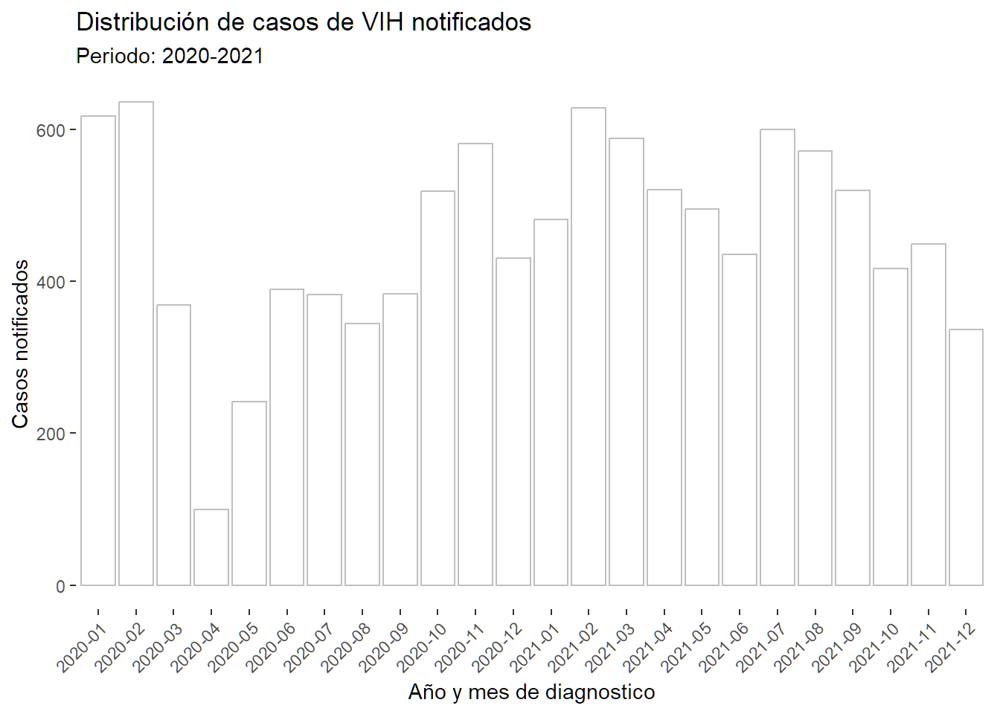
Si comparas el primer gráfico con este se nota mucho la diferencia, (aunque todavía le falta mucho, este se puede presentar). Este seria nuestro histograma, de hecho, hay un geom_ específico para los histogramas, pero como mencioné anteriormente, para el paquete de ggplot hay mucha documentación que básicamente se requiere un entrenamiento aparte. Fijandote en los códigos de ejemplos y también buscando ejemplos en la red, (ejemplo: “como hacer un gráfico de línea con ggplot) vas a ir aprendiendo de forma rutinaria el uso de ggplot.
También a considerar, a diferencias de las tablas, los gráficos podemos directamente (en caso de necesitar) ya sea al clipboard o guardarlos como imagen desde el menú de “plots” en el panel de archivos, gráficos, paquetes, ayuda y visor. Para esto podemos hacer clic donde dice “Export” en el menú y seleccionar ya sea guardar como imagen, como pdf o al clipboard para pegarlo en un documento de Word o Excel o una presentación. Si quieres cambiar el tamaño puede primero usar el zoom o la lupa y aquí manualmente cambiar el tamaño del gráfico y hacer un clic derecho y seleccionar guardar como (igual que desde una página web).
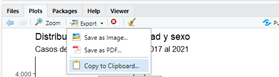
7.3 Análisis de lugar
Ya tenemos una tabla y un gráfico sencillo para describir el comportamiento de los casos notificados del evento (en este caso, VIH) y una salida para hacer un resumen descriptivo de los casos a través del tiempo. Ahora vamos a ver como ha sido la distribución por zona geográfica, en este caso las provincias de residencia de los casos. Para explorar, vamos a construir una tabla que nos será más sencilla y tambien para mostrar otra forma de como hacer tablas con detalles y listas para presentar usando el paquete gtsummary. Esta tabla tendrá como columnas de la provincia de residencia y otra con el total de casos por provincia. Podemos tomar el código que usamos para el análisis de tiempo pero con alguna variación, veamos:
tabla_02 <- base_arreglada %>%
mutate(a_mes_atencion=format(fecha_atencion, "%Y-%m")) %>%
filter(fecha_atencion>="2019-01-01", fecha_atencion<"2022-01-01") %>%
select(provincia_caso, condicion) %>% #solo seleccionamos las variables que vamos a presentar en la tabla
tbl_summary(by=condicion, sort = all_categorical() ~ "frequency") %>% #este es la función más básica de gtsummary (tbl_summary), los parametros que usamos fue separar la columna condicion en sus categorias y ordenamos según la frecuencia de casos usando el parametro sort.
add_overall() #con esta funcion de gtsummary agregamos una columna de total
tabla_02| Characteristic | Overall N = 16,6101 |
Muerto N = 761 |
Vivo N = 16,5341 |
|---|---|---|---|
| provincia_caso | |||
| Santo Domingo | 3,907 (24%) | 5 (6.6%) | 3,902 (24%) |
| Santiago | 2,133 (13%) | 33 (43%) | 2,100 (13%) |
| Distrito Nacional | 2,100 (13%) | 10 (13%) | 2,090 (13%) |
| La Altagracia | 1,423 (8.6%) | 1 (1.3%) | 1,422 (8.6%) |
| San Cristóbal | 848 (5.1%) | 2 (2.6%) | 846 (5.1%) |
| Duarte | 762 (4.6%) | 0 (0%) | 762 (4.6%) |
| La Romana | 657 (4.0%) | 3 (3.9%) | 654 (4.0%) |
| San Pedro de Macorís | 571 (3.4%) | 1 (1.3%) | 570 (3.4%) |
| Puerto Plata | 569 (3.4%) | 0 (0%) | 569 (3.4%) |
| La Vega | 501 (3.0%) | 4 (5.3%) | 497 (3.0%) |
| Monte Cristi | 376 (2.3%) | 1 (1.3%) | 375 (2.3%) |
| Espaillat | 370 (2.2%) | 2 (2.6%) | 368 (2.2%) |
| Monte Plata | 245 (1.5%) | 3 (3.9%) | 242 (1.5%) |
| Samaná | 242 (1.5%) | 5 (6.6%) | 237 (1.4%) |
| Peravia | 237 (1.4%) | 0 (0%) | 237 (1.4%) |
| Valverde | 234 (1.4%) | 0 (0%) | 234 (1.4%) |
| Barahona | 225 (1.4%) | 0 (0%) | 225 (1.4%) |
| María Trinidad Sánchez | 183 (1.1%) | 0 (0%) | 183 (1.1%) |
| San Juan | 171 (1.0%) | 1 (1.3%) | 170 (1.0%) |
| Monseñor Nouel | 124 (0.7%) | 1 (1.3%) | 123 (0.7%) |
| Baoruco | 95 (0.6%) | 0 (0%) | 95 (0.6%) |
| El Seibo | 92 (0.6%) | 0 (0%) | 92 (0.6%) |
| Sánchez Ramírez | 86 (0.5%) | 1 (1.3%) | 85 (0.5%) |
| Azua | 80 (0.5%) | 0 (0%) | 80 (0.5%) |
| Hermanas Mirabal | 69 (0.4%) | 0 (0%) | 69 (0.4%) |
| Independencia | 69 (0.4%) | 1 (1.3%) | 68 (0.4%) |
| Hato Mayor | 56 (0.3%) | 0 (0%) | 56 (0.3%) |
| Dajabón | 55 (0.3%) | 0 (0%) | 55 (0.3%) |
| San José de Ocoa | 44 (0.3%) | 0 (0%) | 44 (0.3%) |
| Santiago Rodríguez | 33 (0.2%) | 1 (1.3%) | 32 (0.2%) |
| Extranjero | 21 (0.1%) | 1 (1.3%) | 20 (0.1%) |
| Pedernales | 21 (0.1%) | 0 (0%) | 21 (0.1%) |
| Elías Piña | 11 (<0.1%) | 0 (0%) | 11 (<0.1%) |
| 1 n (%) | |||
Como puedes ver en la tabla anterior, el 23% de los casos son de la provincia Santo Domingo, durante los 3 años que estamos describiendo.
Para tener una tabla más acabada, como por ejemplo cambiar el idioma de los títulos a español, así como agregar una nota de pie y el título vamos añadiendo estas funciones del paquete de gtsummary.
theme_gtsummary_language(language = "es", decimal.mark = ".") #esta funcion global es para decirle al paquete gtsummary que idioma usar para las tablasSetting theme "language: es"tabla_02 <- base_arreglada %>%
mutate(a_mes_atencion=format(fecha_atencion, "%Y-%m")) %>%
filter(fecha_atencion>="2019-01-01", fecha_atencion<"2022-01-01") %>%
select(provincia_caso, condicion) %>%
tbl_summary(by=condicion, sort = all_categorical() ~ "frequency",
provincia_caso~"Provincia de residencia del caso") %>% #En la segunda linea, le cambiamos el nombre a la variable por otro nombre usando ~
add_overall() %>%
modify_caption("**Tabla 2. Distribución de casos por provincia de residencia**") %>% #con este comando agregamos el título a la tabla
bold_labels() # Con este ponemos en negritas los títulos de las categorías
tabla_02| Característica | Global N = 16,6101 |
Muerto N = 761 |
Vivo N = 16,5341 |
|---|---|---|---|
| Provincia de residencia del caso | |||
| Santo Domingo | 3,907 (24%) | 5 (6.6%) | 3,902 (24%) |
| Santiago | 2,133 (13%) | 33 (43%) | 2,100 (13%) |
| Distrito Nacional | 2,100 (13%) | 10 (13%) | 2,090 (13%) |
| La Altagracia | 1,423 (8.6%) | 1 (1.3%) | 1,422 (8.6%) |
| San Cristóbal | 848 (5.1%) | 2 (2.6%) | 846 (5.1%) |
| Duarte | 762 (4.6%) | 0 (0%) | 762 (4.6%) |
| La Romana | 657 (4.0%) | 3 (3.9%) | 654 (4.0%) |
| San Pedro de Macorís | 571 (3.4%) | 1 (1.3%) | 570 (3.4%) |
| Puerto Plata | 569 (3.4%) | 0 (0%) | 569 (3.4%) |
| La Vega | 501 (3.0%) | 4 (5.3%) | 497 (3.0%) |
| Monte Cristi | 376 (2.3%) | 1 (1.3%) | 375 (2.3%) |
| Espaillat | 370 (2.2%) | 2 (2.6%) | 368 (2.2%) |
| Monte Plata | 245 (1.5%) | 3 (3.9%) | 242 (1.5%) |
| Samaná | 242 (1.5%) | 5 (6.6%) | 237 (1.4%) |
| Peravia | 237 (1.4%) | 0 (0%) | 237 (1.4%) |
| Valverde | 234 (1.4%) | 0 (0%) | 234 (1.4%) |
| Barahona | 225 (1.4%) | 0 (0%) | 225 (1.4%) |
| María Trinidad Sánchez | 183 (1.1%) | 0 (0%) | 183 (1.1%) |
| San Juan | 171 (1.0%) | 1 (1.3%) | 170 (1.0%) |
| Monseñor Nouel | 124 (0.7%) | 1 (1.3%) | 123 (0.7%) |
| Baoruco | 95 (0.6%) | 0 (0%) | 95 (0.6%) |
| El Seibo | 92 (0.6%) | 0 (0%) | 92 (0.6%) |
| Sánchez Ramírez | 86 (0.5%) | 1 (1.3%) | 85 (0.5%) |
| Azua | 80 (0.5%) | 0 (0%) | 80 (0.5%) |
| Hermanas Mirabal | 69 (0.4%) | 0 (0%) | 69 (0.4%) |
| Independencia | 69 (0.4%) | 1 (1.3%) | 68 (0.4%) |
| Hato Mayor | 56 (0.3%) | 0 (0%) | 56 (0.3%) |
| Dajabón | 55 (0.3%) | 0 (0%) | 55 (0.3%) |
| San José de Ocoa | 44 (0.3%) | 0 (0%) | 44 (0.3%) |
| Santiago Rodríguez | 33 (0.2%) | 1 (1.3%) | 32 (0.2%) |
| Extranjero | 21 (0.1%) | 1 (1.3%) | 20 (0.1%) |
| Pedernales | 21 (0.1%) | 0 (0%) | 21 (0.1%) |
| Elías Piña | 11 (<0.1%) | 0 (0%) | 11 (<0.1%) |
| 1 n (%) | |||
En caso de que la variable de lugar que queramos usar es región de salud por ejemplo, con solo cambiar la variable a región (claro, hay que incluirla, dado que en dataframe base_arreglada no está seleccionada) o si a DPS/DAS que reporta también. El paquete gtsummary tiene muchos parámetros que nos facilita tanto para hacer el resumen como para presentar los datos.
En el siguiente Tutorial puedes ver en más detalles todos las opciones para generar una tabla usando gtsummary. Si usas Chrome o Edge, puedes traducir sin problemas al español dado que está solo en inglés.
7.4 Análisis de persona
En esta sección vamos a usar de nuevo la función tbl_summary del paquete gtsummary para hacer el resumen de persona, en este paso toma en cuenta que desde que creamos el dataframe base_arreglada tomamos las variables que vamos a usar, si nos hacen falta, solo tenemos que actualizar este objeto. Las variables a usar serian el sexo, la edad, el país de procedencia, el grupo de edad y la condición de egreso, que para los pasos anteriores la hemos usado con la finalidad de ver el comportamiento de la letalidad. Algo que es importante recalcar, que vaya usando como buena práctica, ve nombrando los objetos de forma que sea fácil para identificar e integrar en tu informe luego, por ejemplo para las tablas he usado la nomenclatura “tabla_” así será más fácil asociar el orden como quisiera ir presentando en el informe.
tabla_03 <- base_arreglada %>%
mutate(a_mes_atencion=format(fecha_atencion, "%Y-%m")) %>%
filter(fecha_atencion>="2019-01-01", fecha_atencion<"2022-01-01") %>%
select(sexo, grupo_edad,edad1, pais_procedencia, condicion) %>% # las variables para describir la poblacion
tbl_summary(by=sexo,
label = list(grupo_edad~"Grupo de edad", #Cuando tenemos dos o más variables que renombrar, debemos poner estas dentro de una lista
edad1~"Edad en años",
grupo_edad~"Grupo de edad en años",
pais_procedencia~"Nacionalidad",
condicion~"Condición de Egreso")) %>%
add_overall() %>%
modify_caption("**Tabla 3. Distribución de casos según características**") %>%
bold_labels()
tabla_03| Característica | Global N = 16,6101 |
Femenino N = 8,4771 |
Masculino N = 8,1331 |
|---|---|---|---|
| Grupo de edad en años | |||
| <1 | 2 (<0.1%) | 2 (<0.1%) | 0 (0%) |
| 1_4 | 92 (0.6%) | 39 (0.5%) | 53 (0.7%) |
| 10_19 | 731 (4.4%) | 491 (5.8%) | 240 (3.0%) |
| 20_29 | 4,575 (28%) | 2,617 (31%) | 1,958 (24%) |
| 30_39 | 4,618 (28%) | 2,358 (28%) | 2,260 (28%) |
| 40_49 | 3,417 (21%) | 1,612 (19%) | 1,805 (22%) |
| 5_9 | 46 (0.3%) | 25 (0.3%) | 21 (0.3%) |
| 50_59 | 1,948 (12%) | 842 (9.9%) | 1,106 (14%) |
| 60 o más | 1,181 (7.1%) | 491 (5.8%) | 690 (8.5%) |
| Edad en años | 35 (27, 46) | 34 (26, 44) | 37 (28, 48) |
| Nacionalidad | |||
| Canadá | 1 (<0.1%) | 0 (0%) | 1 (<0.1%) |
| Colombia | 3 (<0.1%) | 0 (0%) | 3 (<0.1%) |
| Cuba | 2 (<0.1%) | 0 (0%) | 2 (<0.1%) |
| Ecuador | 1 (<0.1%) | 1 (<0.1%) | 0 (0%) |
| Eslovaquia | 1 (<0.1%) | 0 (0%) | 1 (<0.1%) |
| Estados Unidos | 1 (<0.1%) | 0 (0%) | 1 (<0.1%) |
| Francia | 2 (<0.1%) | 1 (<0.1%) | 1 (<0.1%) |
| Haití | 2,940 (18%) | 1,738 (21%) | 1,202 (15%) |
| Honduras | 1 (<0.1%) | 0 (0%) | 1 (<0.1%) |
| Islas Marianas del Norte | 1 (<0.1%) | 0 (0%) | 1 (<0.1%) |
| Islas Marshall | 1 (<0.1%) | 1 (<0.1%) | 0 (0%) |
| México | 14 (<0.1%) | 8 (<0.1%) | 6 (<0.1%) |
| Nicaragua | 1 (<0.1%) | 0 (0%) | 1 (<0.1%) |
| Países Bajos | 2 (<0.1%) | 0 (0%) | 2 (<0.1%) |
| Polonia | 1 (<0.1%) | 0 (0%) | 1 (<0.1%) |
| República Democrática del Congo | 2 (<0.1%) | 1 (<0.1%) | 1 (<0.1%) |
| República Dominicana | 13,588 (82%) | 6,724 (79%) | 6,864 (84%) |
| Ruanda | 1 (<0.1%) | 0 (0%) | 1 (<0.1%) |
| Suiza | 1 (<0.1%) | 0 (0%) | 1 (<0.1%) |
| Venezuela | 46 (0.3%) | 3 (<0.1%) | 43 (0.5%) |
| Condición de Egreso | |||
| Muerto | 76 (0.5%) | 24 (0.3%) | 52 (0.6%) |
| Vivo | 16,534 (100%) | 8,453 (100%) | 8,081 (99%) |
| 1 n (%); Mediana (Q1, Q3) | |||
Algo a notar cuando generamos la tabla es que las nacionalidades son varias y con pocas observaciones, vamos a volver al proceso de “limpieza” para aquellas categorías que tienen pocas observaciones, agruparlas en la categoría de “otras”
tabla_03 <- base_arreglada %>%
mutate(a_mes_atencion=format(fecha_atencion, "%Y-%m"),
pais_procedencia=case_when(pais_procedencia=="República Dominicana"~"Dominicana",
pais_procedencia=="Haití"~"Haitiana",
TRUE~"Otra Nacionalidad")) %>% #como vimos en la tabla anterior, dos nacionalidades sobresalen con respecto a la frecuencia, con la funcion case_when() podemos re-codificar
filter(fecha_atencion>="2019-01-01", fecha_atencion<"2022-01-01") %>%
select(sexo, grupo_edad,edad1, pais_procedencia, condicion) %>% # las variables para describir la poblacion
tbl_summary(by=sexo,
label = list(grupo_edad~"Grupo de edad", #Cuando tenemos dos o más variables que renombrar, debemos poner estas dentro de una lista
edad1~"Edad en años",
grupo_edad~"Grupo de edad en años",
pais_procedencia~"Nacionalidad",
condicion~"Condición de Egreso")) %>%
add_overall() %>%
modify_caption("**Tabla 3. Distribución de casos según características**") %>%
bold_labels()
tabla_03| Característica | Global N = 16,6101 |
Femenino N = 8,4771 |
Masculino N = 8,1331 |
|---|---|---|---|
| Grupo de edad en años | |||
| <1 | 2 (<0.1%) | 2 (<0.1%) | 0 (0%) |
| 1_4 | 92 (0.6%) | 39 (0.5%) | 53 (0.7%) |
| 10_19 | 731 (4.4%) | 491 (5.8%) | 240 (3.0%) |
| 20_29 | 4,575 (28%) | 2,617 (31%) | 1,958 (24%) |
| 30_39 | 4,618 (28%) | 2,358 (28%) | 2,260 (28%) |
| 40_49 | 3,417 (21%) | 1,612 (19%) | 1,805 (22%) |
| 5_9 | 46 (0.3%) | 25 (0.3%) | 21 (0.3%) |
| 50_59 | 1,948 (12%) | 842 (9.9%) | 1,106 (14%) |
| 60 o más | 1,181 (7.1%) | 491 (5.8%) | 690 (8.5%) |
| Edad en años | 35 (27, 46) | 34 (26, 44) | 37 (28, 48) |
| Nacionalidad | |||
| Dominicana | 13,588 (82%) | 6,724 (79%) | 6,864 (84%) |
| Haitiana | 2,940 (18%) | 1,738 (21%) | 1,202 (15%) |
| Otra Nacionalidad | 82 (0.5%) | 15 (0.2%) | 67 (0.8%) |
| Condición de Egreso | |||
| Muerto | 76 (0.5%) | 24 (0.3%) | 52 (0.6%) |
| Vivo | 16,534 (100%) | 8,453 (100%) | 8,081 (99%) |
| 1 n (%); Mediana (Q1, Q3) | |||
En este ejercicio anterior tuvimos que ajustar el país de procedencia o nacionalidad con la finalidad de hacer la tabla más presentable, de nuevo vamos a usar la función case_when() del paquete de tidyverse para re-codificar las categoría en base a los valores originales (los números en variables de texto se organizan de forma diferente). Otro cambio que podemos hacer usando esta función es el grupo de edad (grupo_edad) donde podemos ver que hay una categoría que no sale en orden (5_9a) para corregir esto como funciona case_when es valor actual (grupo_edad==“5_9”) seguido de una virgulilla (~) y el nuevo valor (sugerencia: “05_09”) y para el último valor ya sea mantener el resto de los valores se usa TRUE ~ nombre de la variable :
table_edad_reco <- base_arreglada %>%
mutate(grupo_edad=case_when(grupo_edad=="1_4"~"01_04",
grupo_edad=="5_9"~"05_09",
TRUE~grupo_edad)) %>%
select(grupo_edad, sexo) %>%
tbl_summary(by=sexo)
table_edad_recoAhora con esta mismo resumen que usamos para la tabla anterior, vamos a hacer un gráfico de grupos de edades por sexo, que usamos de forma común para describir la población de cualquier evento. Continuando un poco con ggplot
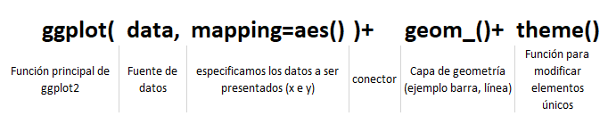
También aparte de lo presentado en la imagen anterior hay otras funciones complementarias (scale_) que ayudan al ajuste del gráfico, pero como sea, solo vamos a enfocarnos en lo básico.
El el gráfico que hicimos de tiempo, solo presentamos una variable, en este ejemplo vamos a presentar una variable con dos o más categorías para mostrar una funcionalidad muy importante de la función de ggplot.
#primero hacemos una tabla resumen con solo grupo edad y sexo
grafico_edad_reco <- base_arreglada %>%
mutate(grupo_edad=case_when(grupo_edad=="1_4"~"01_04",
grupo_edad=="5_9"~"05_09",
TRUE~grupo_edad)) %>%
select(grupo_edad, sexo) %>%
group_by(grupo_edad, sexo) %>% #agrupamos por estas dos variables
count() %>% #realizamos una cuenta de estas dos variables, el resultado es un dataframe con 3 variables (grupo_edad, sexo y n o cuenta)
ggplot(aes(x=grupo_edad, y=n, fill=sexo))+ # como estamos conectando el resumen con la función de ggplot, no necesitamos especificar el parametro data= o fuente de datos
geom_col()
#veamos el gráfico
grafico_edad_reco
Al igual con el ejemplo anterior, antes de usar este gráfico para presentar podemos hacer cambios, ejemplo, las barras que representa cada sexo por separado, el color de relleno también.
grafico_edad_reco <- base_arreglada %>%
mutate(grupo_edad=case_when(grupo_edad=="1_4"~"01_04",
grupo_edad=="5_9"~"05_09",
TRUE~grupo_edad)) %>%
select(grupo_edad, sexo) %>%
group_by(grupo_edad, sexo) %>%
count() %>%
ggplot(aes(x=grupo_edad,
y=n,
fill=sexo))+ #fill es relleno,
geom_col(color="black", #agregamos color al borde
position = "dodge")+ #especificamos que la variable sexo será en columnas separadas, no apiladas
scale_fill_manual(values=c("Femenino"="white",
"Masculino"="grey"))+#con esta función de ayuda podemos manualmente cambiar los colores de relleno, con el parametro values=creamos un vector con las categorias y le asignamos un color.
theme_minimal() #este es un tema (theme) que trae ggplot, hay paquetes que tienen temas mucho más acabado,
grafico_edad_reco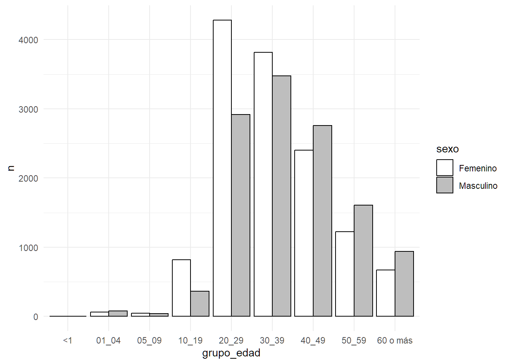
Todavía hay muchos elementos que cambiar pero te dejo de tarea que busques lo siguiente:
¿Cómo agregar un separador de miles al número del eje y?
¿Cómo cambiar los títulos de los ejes y agregar título del gráfico?. (ver ejemplo del análisis de tiempo)
¿Cómo puedo cambiar los colores del relleno de las barras?. ¿Cómo puedo remover o agregar las líneas guía en el fondo del gráfico?
La idea es que puedas también ir desarrollando la habilidad de usar las referencias que están disponible. Realmente no debes de aprenderte todos los comandos y funciones, lo que debes de tomar siempre en cuenta es definir bien que es lo que necesitas o quieres para luego tratar de procesarlo, esto lo mencioné al inicio de este manual.
Ahora que tenemos algunos elementos para comenzar un análisis descriptivo podemos comenzar a trabajar como ponerlos en un mismo documento usando rmarkdown.
7.5 Evaluando si existe relación entre la variable dependiente e independiente
En este ejercicio en los pasos anteriores pudimos hacer un poco de analisis exploratorio, descriptivo, ahora brevemente vamos a realizar un análisis de estadística inferencial usando regresión lineal. Para esto bien sabes que la regresión lineal es un método aplicable en muchas situaciones en las que se estudia la relación entre dos o más variables o predecir un comportamiento, y para esto vamos a usar dos variables que sean continuas.
Vamos a evaluar si existe relación entre el año de ocurrencia de casos y la cantidad de casos y tambien predecir la cantidad de casos para años futuros, para esto tenemos que hacer una transformación de los datos. Primero vamos a crear un nuevo dataframe o una tabla resumen a partir del dataframe de la base arreglada:
casos_por_ann <- base_arreglada %>% #nueva tabla
group_by(ano_atencion) %>% #agrupamos por año del caso
count() #hacemos un conteo de casos (cada fila) por año
casos_por_ann# A tibble: 5 × 2
# Groups: ano_atencion [5]
ano_atencion n
<dbl> <int>
1 2017 4056
2 2018 4825
3 2019 5366
4 2020 5040
5 2021 6209Como podemos ver tenemos una nueva tabla que tiene dos columnas, la de los años (ano_atencion o variable independiente) y la del total de casos (n o variable dependiente). Ahora vamos a construir un nuevo objeto que tendrá el resumen del análisis de la regresión lineal, para esto vamos a usar la función lm() del paquete {base} de R. Los argumentos para esta formula son la base de datos, la variable independiente seguida del simbolo “~” o virgulilla y luego las variables independientes, cada una separada por el simbolo “+” en caso de ser más de una variable independiente. Luego de crear el objeto de regresión lineal o lm, para ver los resultados usamos la función summary() para ver los resultados con más detalles del modelo de regresión.
modelo_reg_lin <- lm(data=casos_por_ann, n~ano_atencion)
summary(modelo_reg_lin)
Call:
lm(formula = n ~ ano_atencion, data = casos_por_ann)
Residuals:
1 2 3 4 5
-139.0 177.9 266.8 -511.3 205.6
Coefficients:
Estimate Std. Error t value Pr(>|t|)
(Intercept) -907690.7 240549.5 -3.773 0.0326 *
ano_atencion 452.1 119.1 3.795 0.0321 *
---
Signif. codes: 0 '***' 0.001 '**' 0.01 '*' 0.05 '.' 0.1 ' ' 1
Residual standard error: 376.8 on 3 degrees of freedom
Multiple R-squared: 0.8276, Adjusted R-squared: 0.7701
F-statistic: 14.4 on 1 and 3 DF, p-value: 0.03212Según la salida que nos muestra la consola tenemos que por cada año que pasa, la variable dependiente (casos) aumenta en 452.1 casos y el valor de R al cuadrado (coeficiente de correlación) es de 0.770102 que significa que el 77% de la variable dependiente se puede explicar por la variable independiente. Verifica el valor de p, este al parecer es menor de 0.05, lo que si hubiesemos planteado una hipótesis nula (no hay relación entre ambas variables) podemos rechazarla y quedarnos con la hipótesis alterna (hay relación significativa entre ambas variables).
Supongamos que ahora quisieramos saber en los años posteriores a los que tenemos en la base resumen de los casos por año, digamos que en los próximos 5 años, como se comportarian los casos reportados, pudieramos usar la función predict() de {base}. Primero vamos a crear un nuevo dataframe con los años futuros y luego vamosa usar el modelo de regresión lineal y le pasamos este nuevo dataframe, así:
#nuevo dataframe (5 años)
ann_futuros <- data.frame(ano_atencion=c(2022:2026))
# prediccion
prediccion <- predict(modelo_reg_lin, ann_futuros)
names(prediccion) <- ann_futuros$ano_atencion #para agregar el nombre o el año
prediccion 2022 2023 2024 2025 2026
6455.5 6907.6 7359.7 7811.8 8263.9 Si queremos agregar las predicciones al dataframe resumen de los años y casos, debemos convertir el vector prediccion en dataframe (usando la función data.frame) y luego unirlo al dataframe resumen.
pred_df <- data.frame(prediccion) %>%
rownames_to_column() %>% #aplicamos la función rownames_to_columns para agregar la columna de años
rename(ano_atencion=1, n=2) %>% #corregimos los nombres (importante antes de unir las tablas)
mutate(ano_atencion=as.numeric(ano_atencion)) #convertimos a tipo numerico la columna de años
nuevo_df <- casos_por_ann %>% #la base original
bind_rows(pred_df) #unimos la base nueva con las predicciones
nuevo_df# A tibble: 10 × 2
# Groups: ano_atencion [10]
ano_atencion n
<dbl> <dbl>
1 2017 4056
2 2018 4825
3 2019 5366
4 2020 5040
5 2021 6209
6 2022 6456.
7 2023 6908.
8 2024 7360.
9 2025 7812.
10 2026 8264.Esta es una muestra de como podemos hacer un análisis de estadistica inferencial. Hay muchos otros que podemos hacer, te recomiendo que revises los temas que te interesan dominar sobre analisis estadístico y busca como puedes llevarlos a cabo usando R, vas a encontrar una gran cantidad de ejemplos. Este que vimos es un solo abordaje, y depndiendo de tus objetivos puede aplicar otros.